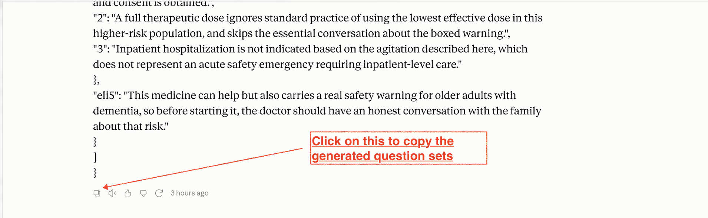

Generate a quiz from any AI and run it in the same exam format as the study hub.
How it works
1
Choose your question style
Pick Boards for board-style questions, or choose a professor style to make the AI write in that professor's format.
2
Add it to your AI of choice
Go to the "Your AI prompt" section below and click Copy prompt. Paste it into Claude for best results, ChatGPT Sol with a Pro account for strong results, or Gemini if needed. Add your notes after MY CONTENT:, then send.
3
Paste the AI response into a Set tab
Copy the entire JSON response from the AI and paste it into Set 1. For multiple batches, use Sets 2-4 too.
4
Name it and launch
Add an optional quiz name, then hit Launch Quiz. The quiz opens in NBME / NBOME style; you can switch to UNE UI inside the quiz if you want.

After the AI finishes, use its copy button to grab the full generated response before pasting it below.
Cap: 25 questions. Increasing the number of questions may cause degraded question quality from your AI.
Your AI prompt
Style: Boards
Target: 15 questions
Paste your notes or existing questions after this prompt before sending to your AI. Boards keeps the current board-style guide; professor styles use the selected professor prompt.
Paste the AI's full copied response into Set 1. If you ask the AI to make questions in smaller groups, paste each extra group into Set 2, Set 3, or Set 4. Launch Quiz will put all filled sets together.
Use this for your first AI batch.
Use this for your second AI batch.
Use this for your third AI batch.
Use this for your fourth AI batch.
Quiz
0
Correct
0
Incorrect
—
Score
TIMER · ELAPSED
00:00
Text Size
Quiz
Question: 1 of 1Answered 0 of 1
Reference Table
Laboratory Values
Shared lab reference for both quiz interfaces, imported from the NBME-style simulator so the values stay consistent.